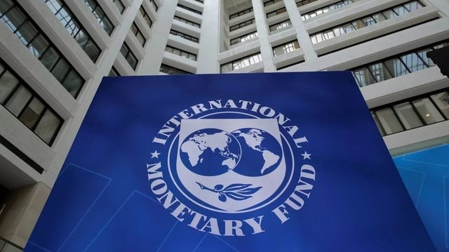
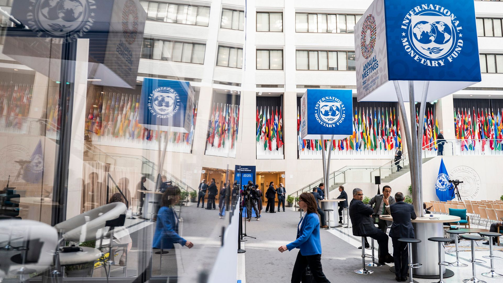

KERJASAMA MULTILATERAL: IMF
- International Monetary Fund (IMF) adalah organisasi internasional yang didirikan pada tahun 1944 untuk membantu negara-negara dalam mengelola keuangan dan stabilitas ekonomi. IMF memiliki 190 negara anggota dan bertujuan untuk memastikan stabilitas sistem moneter global, memberikan dukungan keuangan kepada negara-negara yang menghadapi kesulitan ekonomi, serta mendorong pertumbuhan ekonomi yang berkelanjutan. Salah satu peran utama IMF adalah memberikan konsultasi dan saran kepada negara anggota tentang kebijakan ekonomi dan keuangan.
- Salah satu tujuan utama IMF adalah untuk membantu negara-negara mengatasi masalah ekonomi, seperti defisit anggaran atau krisis keuangan. IMF memberikan pinjaman kepada negara-negara yang membutuhkan dukungan keuangan, tetapi dengan syarat bahwa negara tersebut melakukan reformasi ekonomi untuk memperbaiki situasi keuangannya. Selain itu, IMF juga menyediakan data dan analisis ekonomi yang dapat membantu negara dalam merencanakan kebijakan yang lebih baik. Kerja sama antarnegara di dalam IMF sangat penting, karena banyak tantangan ekonomi yang dihadapi negara-negara saat ini bersifat global dan membutuhkan solusi yang kolaboratif.
- Indonesia merupakan anggota aktif IMF dan telah bekerja sama dengan organisasi ini dalam berbagai program. Selama krisis ekonomi Asia pada tahun 1997-1998, Indonesia menerima bantuan dari IMF untuk membantu stabilisasi ekonomi dan reformasi struktural. Selain itu, Indonesia juga terlibat dalam diskusi dan pertemuan IMF untuk membahas kebijakan ekonomi global dan memberikan masukan mengenai kebutuhan negara berkembang. Dengan berpartisipasi aktif dalam IMF, Indonesia berharap dapat meningkatkan pemahaman dan kerjasama di antara negara-negara anggota, serta memastikan bahwa kebijakan yang diambil dapat mendukung pertumbuhan ekonomi yang berkelanjutan dan inklusif.
 